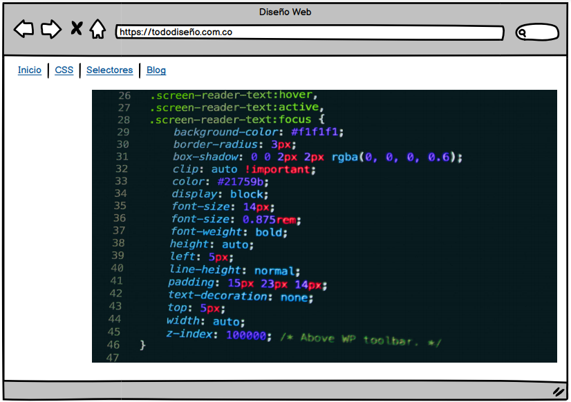

CSS3: Estilos internos y Externos, Selectores CSS
Objetivo general:
Realizar un OVI utilizando metodologías HTML Y CSS3 para poner en práctica los conocimientos adquiridos en el curso.
Objetivo específico 1:
Explicar temas relacionados con CSS3: Estilos internos y Externos, Selectores CSS.
Objetivo específico 2:
Dar a conocer framework utilizados para facilitar el diseño profesional de sitios web
Objetivo específico 3:
Explicar los pasos para la implementación de una hoja de estilos utilizando videos y o contenido interactivo.
Materiales:
https://getbootstrap.com/, https://www.youtube.com/watch?v=DHLGYuR9N8o,https://www.w3schools.com/css/Contenido:
- Introduccion a CSS
- Sintaxis de la definición de cada propiedad CSS
- CSS Inline, Interno y Externo
- ¿Cuáles con las novedades de CSS3?
- Posicionamienyo y visualización
- Selectores
- imagenes
